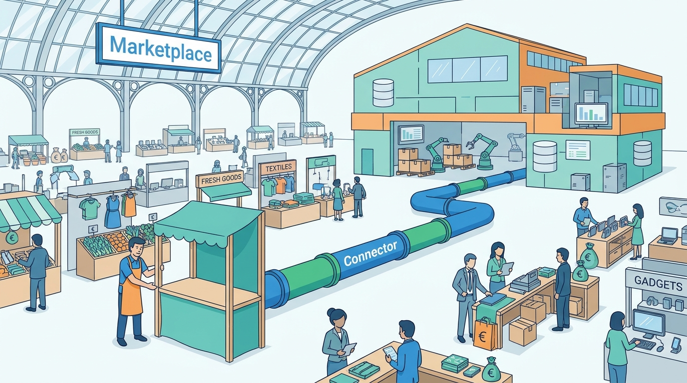

Part V — CHANNELS: Selling Everywhere
Selling on Someone Else's Platform: Marketplaces and Channel Integration
AI-assisted: researched and written with Claude Code and Codex; illustrations generated with Gemini and OpenAI image tools. How this works
